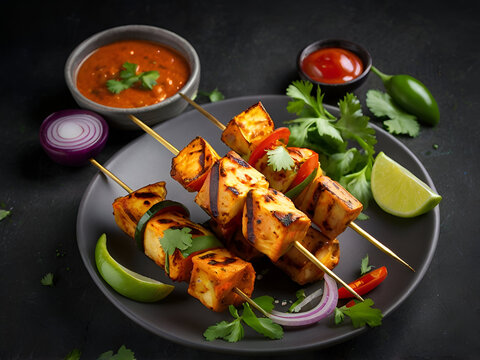

Paneer Tikka

Description
Cubes of paneer cheese are marinated in a mix of spices and then grilled. An easy starter or side dish that takes only minutes to cook. It can also be served with roomali roti or made into Paneer tikka wraps for the main course.
Ingredients
- 1 cup plain yogurt
- 1 tablespoon ginger-garlic paste
- 1 teaspoon lemon juice
- ¼ teaspoon ground turmeric
- ¼ teaspoon ground red chile pepper
- ¼ teaspoon garam masala
- ¼ teaspoon ground cumin
- 1 teaspoon salt
- 1 large onion, cut into 1-inch squares
- 1 tablespoon vegetable oil
- 1 green bell pepper, cubed
- 7 ounces paneer, cut into 1-inch cubes
- 1 onion, sliced into thin rings
Steps
- Line a fine-mesh strainer with muslin or cheesecloth and set inside a small bowl. Pour in yogurt; let drain for 15 minutes. Discard liquid
- Mix drained yogurt, ginger-garlic paste, lemon juice, turmeric, chile powder, cumin, garam masala, and salt together in bowl. Add paneer, onion, and green bell pepper and mix well
- Preheat grill for medium heat and lightly oil the grate.
- Grill until vegetables are soft and cheese is browned, 6 to 8 minutes. Brush with vegetable oil and grill for 1 minute more
- Mix onion rings with green chutney and serve with skewers
Home